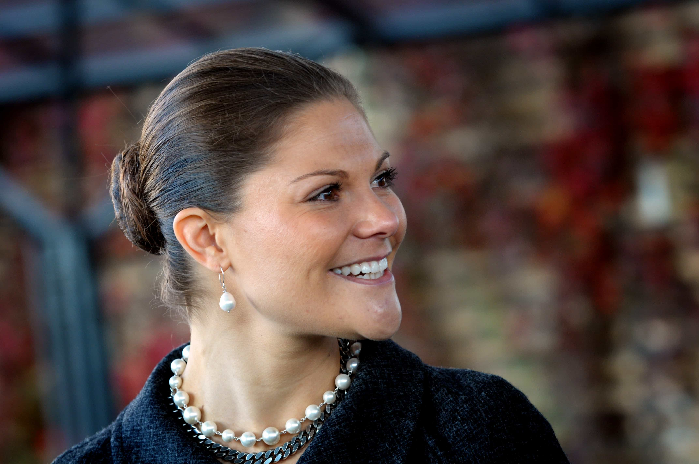

< < < Back
The New Royal Baby Proves That Even A Degenerate Society Lusts For Tradition – Return Of Kings
The mass joy surrounding the May 2 birth of the Duke and Duchess of Cambridge’s second child reminds us that deep-seated institutions such as monarchies continue to attract the hearts and minds of millions. Regardless of whether you endorse constitutional monarchies, it is nigh on impossible to question their appeal for a public that demands social “progress” whilst simultaneously fearing change and the unknown.
Consequently, members of the British royal family, especially Diana in the past and Kate Middleton currently, have been and are the surrogates for the average person’s emotional attachment to the past and traditional values. This includes many SJWs.
Despite never having a proper career, aside from bedding Prince William, and being paid, via taxpayers, to fund the lavish wardrobes she is regularly lauded for, Kate Middleton is presented as a paragon of feminine achievement and an embodiment of every girl’s dream: marrying a prince.
People will line up to see her particularly, but also the Queen, William, and others. Relatively few of those same people, however, will volunteer for a charity, turn up to community events not involving their own children, or generally do something similarly constructive.
Questioned for the wrong reasons

The British monarchy’s biggest selling point is now Kate Middleton’s make-up collection, wardrobe and posture coach.
Ironically, the only serious time the British monarchy found itself questioned was during the tumultuous divorce of Prince Charles and Princess Diana, and then after the latter’s death. As the part-time patron saint of stopping land mines (only because she had the spare hours and wealth via her own old-nobility family and marriage), Diana remained untouchable during her lifetime and now after it.
Don’t mess with a woman who has “earned” her place as a princess, folks. On the matter of why the monarchy still has a justifiable place in British politics, though, prominent critics have been few and far between.
In Australia, because of the amorphous position of having a Queen who permanently resides in Great Britain but claims to represent 25 million people from Sydney to Perth, opposition to the monarchy is much stronger, albeit only structured as a long-term goal. Pathetically, the appearances of Prince William, Kate and George, along with Prince Harry, on our shores have boosted the monarchy’s appeal.
People are not wooed by proper equality. They are wooed by exteriors based on emotions, dress sense paid for by British taxpayers, and ample cute or scandalous photo-ops.
Even Sweden has a monarchy – and loves it

Rather than questioning why Sweden had a non-egalitarian monarchy in the first place, Swedish SJWs were more concerned about making sure the first-born daughter, Victoria, could accede to the throne ahead of her younger brother.
It is remarkable that Sweden, which has earned a name for itself as a radical melting pot of ridiculous feminist, multicultural, and other social experiments, retains a monarchy. Feminists and other crackpots in that nation will propose all manner of common sense positions, such as legislating that all prostitutes are victims of male violence, even the many girls who choose the equivalent of US$200 per hour as a hooker over $10 as a waitress or $15 as a social worker.
But the monarchy, which uses wealth and status to perpetuate the self-fulfilling prophecy of a charismatic royal family deserving of respect and reverence? Well, that’s just an expression of Swedish identity and history. Mainstream criticism of the foundations of the monarchy, as opposed to perceptions of particular actions by a member of the royal family, are almost non-existent in Sweden.
Because of the male primogeniture in force before 1980, the Swedish king’s second child, a son named Carl Philip, was the Crown Prince when he was born. After an outcry from feminists and others within the left, he was bumped down to second in the line of succession, behind his older sister Victoria.
Instead of questioning why Sweden would have a monarchy in the first place, the SJWs of the late 1970s and 1980s thought the only issue was primogeniture. The overt social discrimination of “royal blood” was ignored and only the gender element emphasized.
Two principal possibilities can help explain this political pass for monarchies. Firstly, mostly unconsciously, political leaders personally support the idea of a constitutional monarchy, however much it contradicts almost every other policy of egalitarianism (or pretend egalitarianism in the case of anti-male initiatives). They are basically, under this view, “victims” of the same longing for stability and tradition as their constituents.
Or, secondly, many political leaders have learned never to question the monarchy, fearing the result and ignoring their own secret preferences. The political capital gained in such an attack on a privileged institution is outweighed by the potential backlash from a public largely supporting it.
Kate Middleton – “one of the world’s most influential people”
Royalty breeds a cult-like following. Support for the monarchy is powerful when people don’t feel they’re actually longing for the past and its values.
Sadly, Time correctly placed Kate in this list in 2012 and 2013. Her reputation, personal following, and media exposure are beyond question. But why is someone with such little merit on the list in the first place? What does it say about society’s obsession with promoting those who have, essentially, done nothing to be promoted?
The reason is that Kate, rather than just being a vehicle for traditionalism, gives the specific, romcom-style story of a woman who is pulled from the common classes (although her parents became millionaires after she was born) and raised to the status of royalty.
Amidst the clamoring of SJWs for momentous social changes that advance the interests of women, denigrate men and condemn or criminalize common sense, the monarchies and all the Kate Middletons of the world stand out. Many women, rallying unconsciously against the narrative of “independence,” crave for her fantasy of being rescued from the drudgery of normal life.
Beyond the fantasy itself, they salivate over salvaging some of the traditionalism otherwise rapidly ripped apart in the modern age. Many men, monarchical support being somewhat gender-neutral, join the fanfare as a way of emotionalizing their own internal barking for a return to something solid when everything else seems in rapid flux.
The Kennedys were (and still are) America’s de facto monarchy
Britons and Europeans are not the only people infatuated with monarchies. The Kennedys have assumed that role since the 1960s. The mere mentioning of John. F. Kennedy and Jackie resurfaces the “Camelot” fantasy transplanted in the United States.
Forget the hypocrisy of a President who preached social justice and wealth redistribution but was worth hundreds of millions of dollars in today’s money via his capitalist father. The Kennedys’ fortune, prestige, and sense of elegance meant they provided for America what it had lacked since 1776: a family to worship and revere.
Like the Windsors of Buckingham Palace, the Kennedys presented America with the opportunity to distract themselves from their lives and feel dazzled. The world was changing, wars were raging, but John and Jackie were there to show them what could be, even if in a million years and another universe. The worshipper of a Kate Middleton or JFK gets both emotional support in chaotic times and the attendant fairytale.
Watch the monarchy’s star rise further after the royal birth
JFK astutely sold the public a fantasy they could believe in, lean on, and dream about for themselves: a political monarchy.
William and Kate could name their new baby girl “Long-Distance Phone Call” and she would still be guaranteed a life of sycophantic praise akin to what William the Conqueror received as absolute monarch of England in the 11th century. I am not advocating for the retention of a monarchy or the establishment of any more. But understanding the allure of monarchies helps to explain how SJWs and many others can internally justify their destruction of the rest of the society.
Monarchies offer both reassurance and distraction. Supporters can ignore the elitism and bigotry of a class guaranteed rule, however symbolic, because it makes them feel good. Like the menagerie of puppy videos on YouTube, monarchies, and those who suck-up to them, are here to stay.
Read More: Twitter Is The Modern Day Royal Court—We Know What Comes Next


{kind=link}